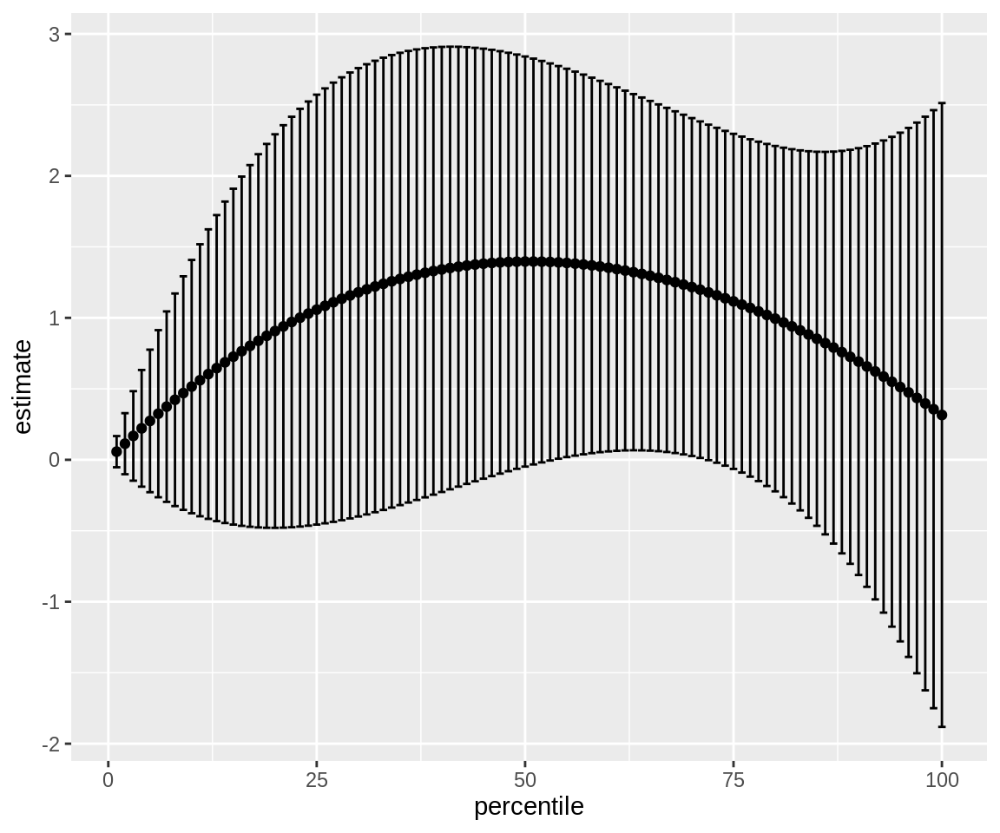

perc_calculator_example.RmdReardon (2011) introduced a very interesting concept in which he calculates percentile differences from ordered categorical variables. He explains his procedure very much in detail in the appendix of the book chapter but no formal implementation has been yet available on the web. With this package I introduce a function that applies the procedure, following a step-by-step Stata script that Sean Reardon kindly sent me.
In this vignette I show you how to use the function and match the results to the Stata code provided by Reardon himself.
We’ll be using a real world data set, the General Social Survey, that surveys American citizens on attitudes, behaviors and attributes. For this example we’ll need the packages below.
Let’s prepare the data.
set.seed(213141)
data("GSSvocab")
gss <-
as_tibble(GSSvocab) %>%
filter(year == '1978') %>%
mutate(weight = sample(1:3, size = nrow(.), replace = TRUE, prob = c(0.1, 0.5, 0.4))) %>%
select(ageGroup, vocab, weight)
gss## # A tibble: 1,532 x 3
## ageGroup vocab weight
## <fct> <dbl> <int>
## 1 50-59 10 2
## 2 60+ 6 2
## 3 30-39 4 3
## 4 50-59 9 2
## 5 40-49 6 2
## 6 18-29 6 3
## 7 18-29 4 1
## 8 50-59 7 2
## 9 40-49 8 2
## 10 18-29 3 1
## # … with 1,522 more rowsThis is the minimum dataset that the function will accept. This means that it needs to have at least one categorical variable (ageGroup) and a continuous variable (vocab) (the vector of weights is optional). The first variable is the typical age variable but asked in age brackets rather than in a continuous fashion. The second one measures the number of words out of 10 correct on a vocabulary test.
The package is called perccalc, short for percentile calculator and we can install and load it with this code:
devtools::install_github("cimentadaj/perccalc")
library(perccalc)The package only has two functions called perc_diff and perc_dist. They’re very easy to use, we just specify the data, the name of the categorical and continuous variable and the percentile difference we want.
Let’s put it to use!
## Error in category_summary(data_model, variable_name, continuous_name, : is_ordered_fct is not TRUEI generated that error on purpose to raise a very important requirement of the function: the categorical variable needs to be an ordered factor. This is very important because otherwise we could be calculating percentile differences from categorical variables which have no apparent order such as married, single and widowed.
We can turn the previous into an ordered factor with the code below.
Now it’ll work.
## difference se
## 0.2185802 0.3905549We can play around with other percentiles
## difference se
## 0.8618113 0.3403813And we can add a vector of weights
perc_diff(gss, ageGroup, vocab, weight)## difference se
## 0.1760728 0.3775078Now, how are we sure that these estimates are as accurate as the Reardon (2011) implementation? We can compare the Stata output using this data set.
# Saving the dataset to a path
gss %>%
write_dta(path = "C:\\Users\\cimentadaj\\Downloads\\gss_data.dta", version = 13)Running the code below using the gss_data.dta..
*--------
use "/Users/cimentadaj/Downloads/gss_data.dta", clear
drop if missing(ageGroup)
drop if missing(vocab)
tab ageGroup, gen(inc)
*--------
/*-----------------------
Making a data set that has
one observation per age group category
and has mean and se(mean) in each category
and percent of population in the category
------------------------*/
tempname memhold
tempfile results
postfile `memhold' agegroup mean se_mean per using `results'
forv i = 1/5 {
sum inc`i' [aw=weight]
loc per`i' = r(mean)
qui sum vocab if inc`i'==1
if `r(N)'>0 {
qui regress vocab if inc`i'==1 [aw=weight]
post `memhold' (`i') (_b[_cons]) (_se[_cons]) (`per`i'')
}
}
postclose `memhold'
/*-----------------------
Making age group categories
into percentiles
------------------------*/
use `results', clear
sort agegroup
gen cathi = sum(per)
gen catlo = cathi[_n-1]
replace catlo = 0 if agegroup==1
gen catmid = (catlo+cathi)/2
/*-----------------------
Calculate age group
vocabulary gaps
------------------------*/
sort agegroup
g x1 = catmid
g x2 = catmid^2 + ((cathi-catlo)^2)/12
g x3 = catmid^3 + ((cathi-catlo)^2)/4
g cimnhi = mean + 1.96*se_mean
g cimnlo = mean - 1.96*se_mean
reg mean x1 x2 x3 [aw=1/se_mean^2]
twoway (rcap cimnhi cimnlo catmid) (scatter mean catmid) ///
(function y = _b[_cons] + _b[x1]*x + _b[x2]*x^2 + _b[x3]*x^3, ran(0 1))
loc hi_p = 90
loc lo_p = 10
loc d1 = [`hi_p' - `lo_p']/100
loc d2 = [(`hi_p')^2 - (`lo_p')^2]/(100^2)
loc d3 = [(`hi_p')^3 - (`lo_p')^3]/(100^3)
lincom `d1'*x1 + `d2'*x2 + `d3'*x3
loc diff`hi_p'`lo_p' = r(estimate)
loc se`hi_p'`lo_p' = r(se)
di "`hi_p'-`lo_p' gap: `diff`hi_p'`lo_p''"
di "se(`hi_p'-`lo_p' gap): `se`hi_p'`lo_p''"I get that the 90/10 difference is 0.1760 with a standard error of 0.377. Does it sound familiar?
perc_diff(gss, ageGroup, vocab, weight)## difference se
## 0.1760728 0.3775078Finally, there’s perc_dist that shares a lot of similarity with perc_diff. It calculates the estimate for every percentile. You can use this to perform your own analysis. For example,
## # A tibble: 6 x 3
## percentile estimate std.error
## <int> <dbl> <dbl>
## 1 1 0.0590 0.0588
## 2 2 0.117 0.115
## 3 3 0.173 0.169
## 4 4 0.227 0.220
## 5 5 0.281 0.268
## 6 6 0.333 0.315We can also add the optional set of weights and graph it in a more convenient way.
gss %>%
perc_dist(ageGroup, vocab, weight) %>%
mutate(ci_low = estimate - 1.96 * std.error,
ci_hi = estimate + 1.96 * std.error) %>%
ggplot(aes(percentile, estimate)) +
geom_point() +
geom_errorbar(aes(ymin = ci_low, ymax = ci_hi))
Please note that for calculating the difference between two percentiles it is more accurate to use the perc_diff function. The perc_diff function calculates the difference through a linear combination of coefficients.
For example:
perc_dist(gss, ageGroup, vocab, weight) %>%
filter(percentile %in% c(90, 10)) %>%
summarize(diff = diff(estimate),
se_diff = diff(std.error))## # A tibble: 1 x 2
## diff se_diff
## <dbl> <dbl>
## 1 0.176 0.312compared to
## difference se
## 0.1760728 0.3775078Note how the coefficients are the same but the standard error is different.
I hope this was a convincing example, I know this will be useful for me. All the intellectual ideas come from Sean Reardon, as well as the Stata code. The R implementation is my own work.